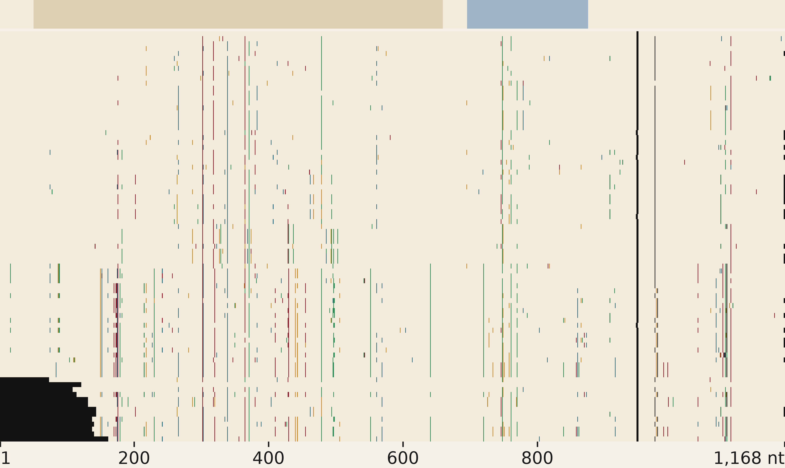
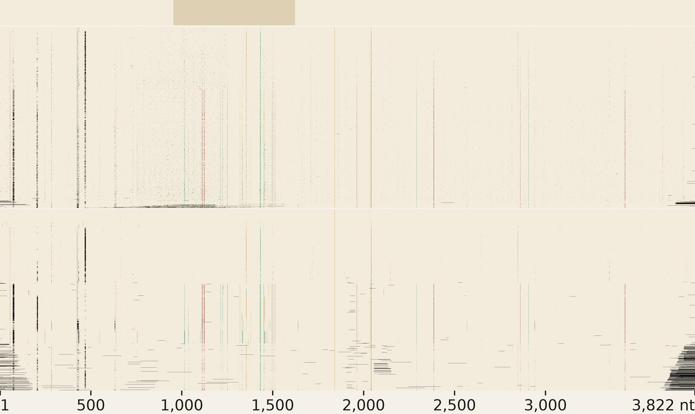
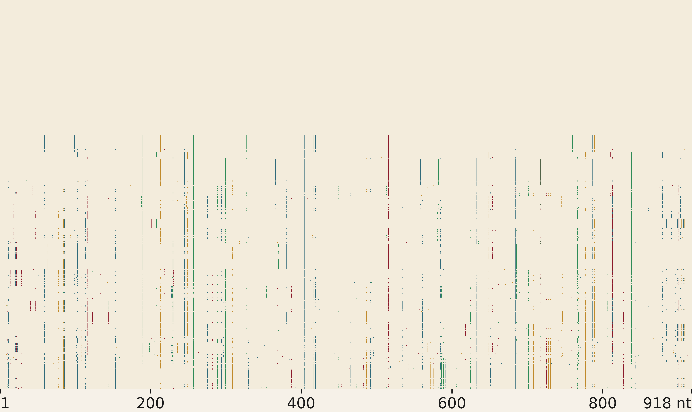
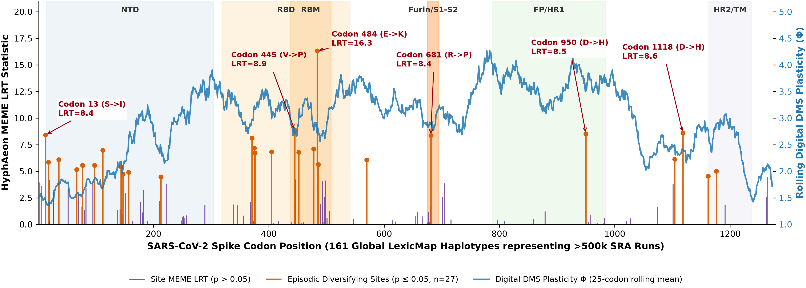

ATwo routes, one cohort shape
A graph path-walker on Logan unitigs and a streaming assembler on Logan contigs, scanning the same planetary SRA petabase from one reference CDS.
Logan universe
4.99 M
subject genomes in the LexicMap index—the universe each query scans.
Walker contamination filter
0.555% → 0%
mislabeled spike accessions, raw unitig hits →
CLEAN_FULL_LENGTH.BObelisks across microbiomes
Route A · walker
METATRANSCRIPTOMIC_BCT dominates: obelisks live in bacterial microbiome transcriptomes across human and microbial cohorts.
kmindex hits924unique runs
max contain.0.97Obelisk-α
shards queried141meta + metaT
centroids5α β γ ε S.s.

Obelisk-α (S.s.: Streptococcus sanguinis). Top strip: Oblin-1 brown, Oblin-2 blue. Rows sorted by edit count.
match
A
C
G
T
gap
CSARS-CoV-2 spike: two routes
Route ARoute B
The routes are complementary. Only the walker reaches the divergent tail, whereas only LexicMap permissive recovers 1.15 M Alpha/Delta-era runs that strict filtering drops.
LexicMap HSPs5.88 M24 GB
walker20k ok47.2%9,448 / 20k
CLEAN_FULL6,827pid 98.75
perm. sieved79,621of 1.15 M

Shared spike reference on top, RBD brown. Top: kmindex → walker 20k. Bottom: LexicMap permissive. Columns align.
match
A
C
G
T
gap
DH. pylori: 25-gene panel
Route B · streamer
Four audit tiers per marker place every accession in one reference frame, from clean full-length sequences to low-coverage fragments.
strict markers20conserved
loose markers5selection
audit tiers4per marker
HyphAeon passoipAdone

oipA strict panel: 1,042 clean accessions, sorted by substitution count.
match
A
C
G
T
gap
ESRA metadata: the walker drives contamination to zero
FHyphAeon: selection on the recovered cohort

27 diversifying sites across 161 global spike haplotypes, led by antibody-escape hub E484K. Shaded bands mark spike domains.
haplotypes161>500k SRA runs
top siteE484KMEME LRT 16.3
runtime29.5 sno input tree